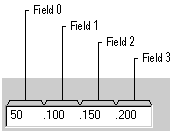

An Internet Protocol (IP) address control allows the user to enter an IP address in an easily understood format. This control also allows the application to obtain the address in numeric form rather than in text form.
Windows Internet Explorer Version 4.0 introduces the IP address control, a new control similar to an edit control that allows the user to enter a numeric address in Internet protocol (IP) format. This format consists of four three-digit fields. Each field is treated individually; the field numbers are zero-based and proceed from left to right as shown in this figure.

The control allows only numeric text to be entered in each of the fields. Once three digits have been entered in a given field, keyboard focus is automatically moved to the next field. If filling the entire field is not required by the application, the user can enter fewer than three digits. For example, if the field should only contain the number twenty-one, typing "21" and pressing the key will take the user to the next field.
The default range for each field is 0 to 255, but the application can set the range to any values between those limits with the IPM_SETRANGE message.
[!Note]
The IP address control is implemented in version 4.71 and later of Comctl32.dll.
Â
Before creating an IP address control, call InitCommonControlsEx with the ICC_INTERNET_CLASSES flag set in the dwICC member of the INITCOMMONCONTROLSEX structure.
Use the CreateWindow or the CreateWindowEx function to create an IP address control. The class name for the control is WC_IPADDRESS, which is defined in Commctrl.h. No IP address control-specific styles exist; however, because this is a child control, use the WS_CHILD style as a minimum.
An IP address control is not an edit control and it will not respond to EM_ messages. It will, however, send the owner window the following edit control notifications through the WM_COMMAND message. Note that the IP address control will also send private IPN_ notifications through the WM_NOTIFY message.
| Notification | Reason for notification |
|---|---|
| EN_SETFOCUS | Sent when the IP address control gains the keyboard focus. |
| EN_KILLFOCUS | Sent when the IP address control loses the keyboard focus. |
| EN_CHANGE | Sent when any field in the IP address control changes. Like the EN_CHANGE notification from a standard edit control, this notification is received after the screen has been updated. |
Â
Â
Â